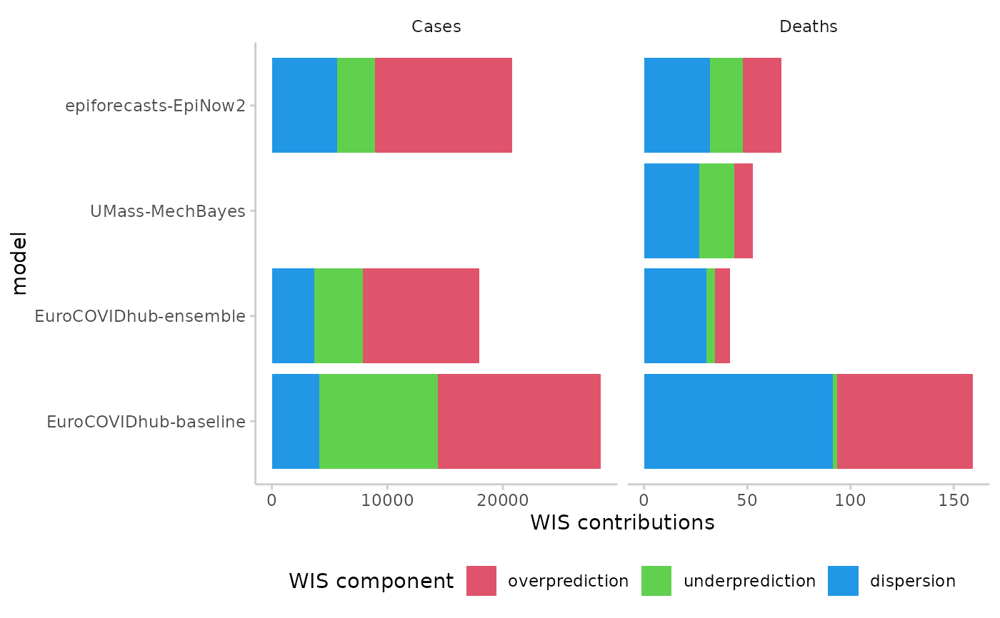

Visualise the components of the weighted interval score: penalties for over-prediction, under-prediction and for high dispersion (lack of sharpness).
Arguments
- scores
A data.table of scores based on quantile forecasts as produced by
score()and summarised usingsummarise_scores().- x
The variable from the scores you want to show on the x-Axis. Usually this will be "model".
- relative_contributions
Logical. Show relative contributions instead of absolute contributions? Default is
FALSEand this functionality is not available yet.- flip
Boolean (default is
FALSE), whether or not to flip the axes.
Value
A ggplot object showing a contributions from the three components of the weighted interval score.
A ggplot object with a visualisation of the WIS decomposition
References
Bracher J, Ray E, Gneiting T, Reich, N (2020) Evaluating epidemic forecasts in an interval format. https://journals.plos.org/ploscompbiol/article?id=10.1371/journal.pcbi.1008618
Examples
library(ggplot2)
library(magrittr) # pipe operator
scores <- example_quantile %>%
as_forecast_quantile %>%
score()
#> ℹ Some rows containing NA values may be removed. This is fine if not
#> unexpected.
scores <- summarise_scores(scores, by = c("model", "target_type"))
plot_wis(scores,
x = "model",
relative_contributions = TRUE
) +
facet_wrap(~target_type)
plot_wis(scores,
x = "model",
relative_contributions = FALSE
) +
facet_wrap(~target_type, scales = "free_x")
